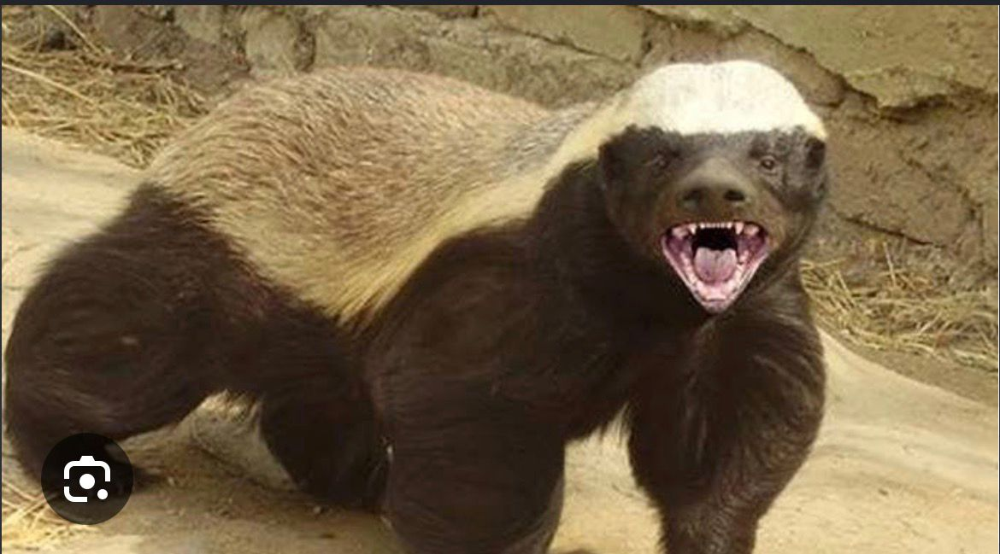
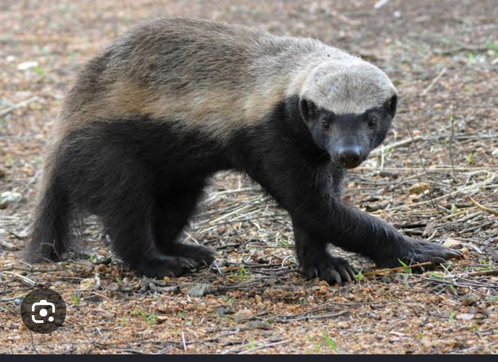

Gunnar seva members ek aisa group hai, jo ek society ka support system hai. Gunnar seva members me 6 log hai — ayan, ankur, keyur, rishi, om, . Ye log gunnar ka rescue karte hai jo ek jokhim bhara kaam hai. ye log apni jaan pe khel kar unko pakadte hai kyunki aap sab log aaram se apni zindagi ji sakte hai. Gunnar seva members abhi bs ek chhota sa group hai jo desh ko sudharne ki kosis kar rha hai, or ye group abhi bhale bohat hi chhota hai lekin ek din ye bohat hi bada group banega or apne desh ki youth ko ek inspiration dega. aise hi aap gunnar seva members ko support karte rahiye, ye ek na ek din bohat bada group banega.
Gunnar ke baare mein (Honey Badger): Gunnar asal mein ek honey badger (Mellivora capensis) hai, jo duniya ke sabse nirbhay janwaron mein se ek maana jaata hai — Guinness World Records mein bhi "world's most fearless creature" ka tag mil chuka hai. Iski skin bohot moti aur loose hoti hai, jisse ye saanp ke katne, bees ke stings, aur porcupine ke quills tak se bach jaata hai.
Ye Africa, South-West Asia aur Indian subcontinent mein paaya jaata hai, aur size mein chhota hone ke bawajood sheron aur hyenas jaise bade predators se bhi bhidne se nahi darta. Isi wajah se Gunnar Seva team ne apne rescue mission ka naam ispe rakha hai — jokhim bhare kaam mein bhi peeche na hatna, yahi iski pehchaan hai.
Contact: 992agarbatinaryal2prasadi